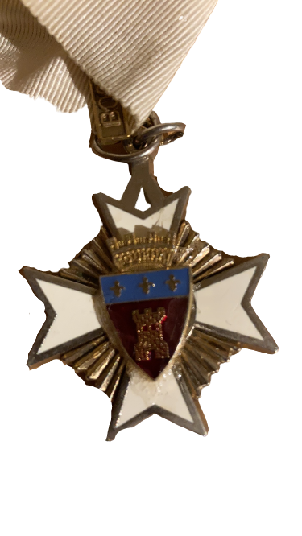
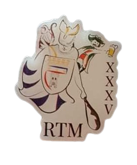

La BW
Témoignage de Dr Stéphane COLIN
Fondation de la BW au second trimestre année académique 1990-91. C’était aux alentours de février-mars me semble t’il. Cela s’est passé un après-midi de semaine au premier étage du Petit Bitu 1 à l’époque (salle où se déroulaient les coronas).
C’était un corona CIR (vu que c’était une création de régionale) Elle était présidée par Lapin (François Bersez ) en présence des divers présidents, représentants des régionales de l’époque. IL y avait de ce que je me souvienne, entre autres «Coincoin» (Alain Jacques), «Brutus» (Marc Brunée), «Durex» (Xavier Goebels de la Lux / Point Carré...), Pinkie... Il y avait aussi François Xavier Willems (étudiant en Droit) en tant que KMKS, Christophe Colin (mon frangin, étudiant en droit FUSL Bxl) en tant que Moines Pervers de St Louis.
Nous étions 3 (Vincent Piret, Vincent Maquet et moi Stéphane Colin) à passer nos nouvelles couleurs / lettres vu que nous étions étudiants Namurois en Médecine, calottés UCL KGOS (dont les tous premiers calottés au départ) Vincent Piret, Laurent Gilbeau, … s’étaient fait calottés UCL BW en 89 ou 90.
Il y avait d’autres membres du KGOS étudiants en Médecine et Droit dont Alexis Deswaef. C’est suite à la polémique et tension crées par les baptêmes et calottes UCL KGOS (Kardia Gaia Osia Sofia) au sein de Namur par des étudiants Namurois (et non tolérés par le CIR) que Lapin en tant que praeses CIR nous a proposé de nous «ranger» et comme il n’y avait pas de BW à l’époque, de la créer. Ce qui fut donc réalisé. Hughes Sorgeloos alias» Robocop « (suite à son accident et port de minerve) nous a demandé pour rentrer à la BW et il a donc été introduit par nous même par la suite ; et c’est lui qui a assuré et organisé la 1ère rentrée de bleus et année académique complète de 91-92 vu que Vincent Piret ( Praeses ) et Moi même ( Vice ) nous migrions à l’UCL en Woluwe.
Représentant les étudiants du Brabant-Wallon et de Bruxelles, ses symboles sont logiquement: le D’jan de Nivelles, le Manneken Pis et le Macca de Wavre! Ses couleurs sont azur et argent!
(...) Nous organisons aussi une excursion à travers le Brabant et Bruxelles: déjeuner sur la bute du lion de Waterloo, initiation à l’absinthe au little délirium, dégustation de Tarte al Djote à Nivelles et j’en passe! (...)
HOEKMAN Clément Praeses BW XXIIIème


L’ordre de la Tarte al djote
C’est le vlek interne de la BW, il est représenté par une bande bleu et blanche avec le Djan Djan dessus.
La médaille appartient au Grand-Maître de l’ordre de la Tarte Al D’jote.
Syllabus de Calotte BW 2010-2011
L’ordre du Manneken Pis
C’est le vlek externe de la BW, il est représenté par une bande verte et rouge avec le Manneken Pis dessus.
La médaille appartient au gardien de l’ordre du Manneken Pis.
Syllabus de Calotte BW 2010-2011
Le Bal des Bières
Le Bal des Bières est l’une des plus grandes soirées se déroulant sur le campus de Namur et est organisé par notre grande et puissante régionale. Lors de cette soirée, nous proposons un grand choix de bières spéciales. Un bar normal est également à la disposition des visiteurs.
Au début, le bal des bières s’appelait « soirée européenne » et n’avait pas grand-chose en commun avec le bal que l’on connaît aujourd’hui. (...)
A cette époque, l’Europe était très en vogue, on voyait en elle un avenir prospère et on commençait à peine à parler de monnaie commune.
Nos braves fondateurs (...) décidèrent donc de créer une soirée à l’arsenal dans laquelle il y aurait 12 stands (1 pour chaque pays membre de cette époque) et d’y vendre les alcools et spécialités de chaque pays.
Cette soirée eut un succès sans précédent tant et si bien qu’il n’y eut plus assez de place à l’arsenal pour contenir tous les gens intéressés. Le comité décida donc d’organiser cette soirée au parking Sciences Eco.
Syllabus de Calotte BW 2010-2011
Les statuts
Il existe une bonne centaine de pages de statuts (...). Il y a cependant quelques traditions qui ont été instaurées au fil de l’histoire de la BW qu’il vaut mieux respecter selon le Syllabus BW.
- Il n’y a pas de récales pendant les bleusailles.
- On fait des bibitives au cidre.
- On fait un bal des bières.
- Une activité de fin d’année est organisée à la fin des examens.
- Tous les BW sont des gens géniaux
Syllabus de Calotte BW 2010-2011

 |
 |
 |
 |
|  |  |
 |